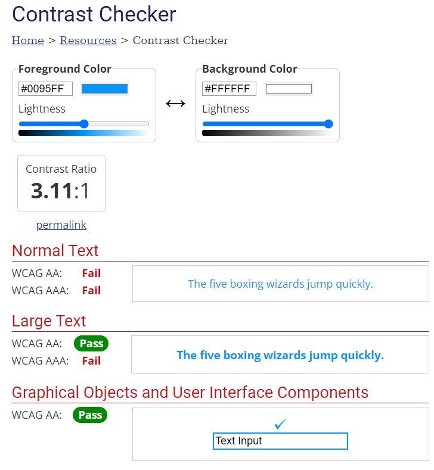
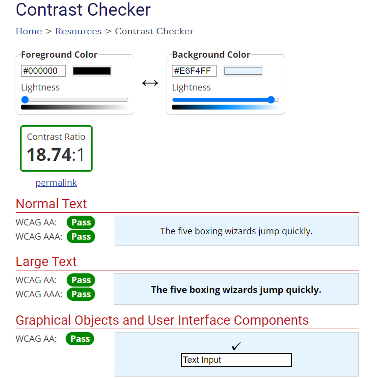
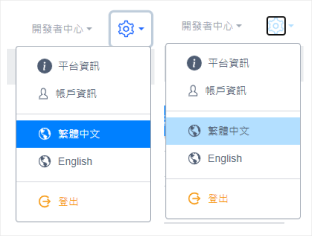
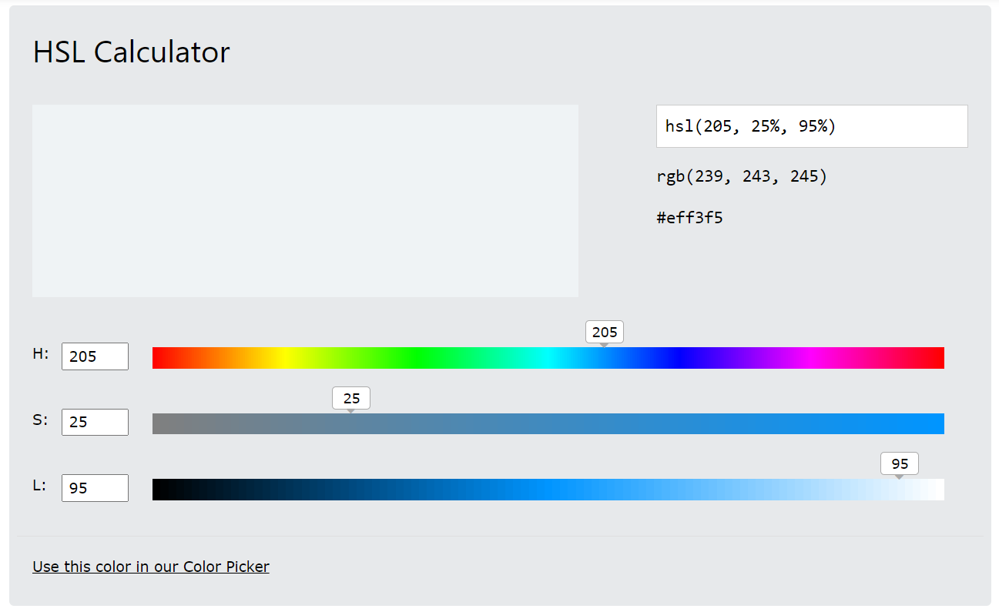
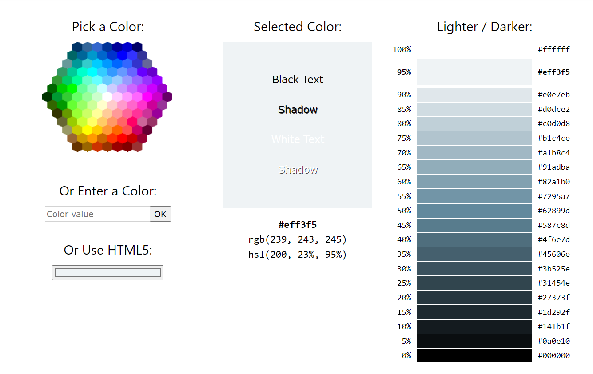

Neutrals中性色

使用Webaim或theming-designer工具得知，只有以上4個兼容對比度建議，我們可以剃除不適用色階。
Semantic Colors語義顏色
傳達特定目的顏色。
success - 表達積極正面訊息，比如新增成功、修改成功。
warning - 警告使用者資料儲存後將被覆寫，並永久被改變。
danger - 警告使用者資料採取破壞性行動，永久刪除不可回復。
info - 通常表達文字帶url功能，點擊後進入其他頁面。

必須注意品牌主色Primary colors和Semantic Colors看起來過於相似，視情況手動在飽和度(Saturation)、明度(Value)做出差異。例如：
- 以IIOT 中華電信LOGO品牌識別色為例衍生light mode色彩系統過程
1.Primary colors
使用LOGO標準色做為Primary colors

1-2.Color Converter 輸入#0065AC，找到Hsl 點擊連結打開新網頁打開 換算成HSL數值的HSL Calculator工具。

1-3.點擊Color Converter 工具的Hsl，連結打開HSL Calculator工具，看到自動轉換HSL數值。

1-3-1.數值205為Primary colors在色相環的角度，數值固定不變，改變色相會改變如偏藍綠色或藍紫色。
1-3-2.Saturation飽和度，Primary colors預設值100。
1-3-3.Value明度，這邊使用自動偵測轉換CHTE LOGO，明度為34。
1-4.點擊HSL Calculator Use this color in our Color Picker連結
1-3-3.Value明度，這邊使用自動偵測轉換CHTE LOGO，明度為34。
1-4.點擊HSL Calculator Use this color in our Color Picker連結

1-4-1 數字1紅框為Primary colors 的色階位置，數字2為系統自動帶出色階色票
1-4-2 以上搭配Webaim工具找出符合最佳對比度顏色就可選出Secondary colors輔助色。等等

Secondary colors輔助色
2-1參考 Primary colors在 Use this color in our Color Picker 帶出來色階找出#0095ff ，色彩高飽和度可做highlight突出效果，以及符合Webaim建議最佳對比度，#e6f4ff 符合建議最佳對比度但色彩飽和度低，highlight突出效果差
  3.Neutrals中性色
3-1回到1-4.HSL Calculator， Saturation飽和度，從100降為50，h色相是情況可以略調整
3-2 點擊HSL Calculator Use this color in our Color Picker連結帶出
3-3參考2-1挑選出幾個適當的灰階做surface/on surface使用
註:以IIOT為例，保持同樣色相205調整出來灰階，整體視覺感知太過呆板

IIoT 主色 hsl(205, 100%, 34%)
IIoT 主色hsl(205, 100%, 34%)調整飽和度和明度計算出來灰階
校正後灰階
太過於規律產生效果呆板，校正第一個數值205 =>208、210、218、220 校正出來帶藍灰階，讓整體有些微差異讓背景之間有些差異做出區隔性

4. Semantic surface Colors on modal 語義顏色應用彈跳式modal
- Button color